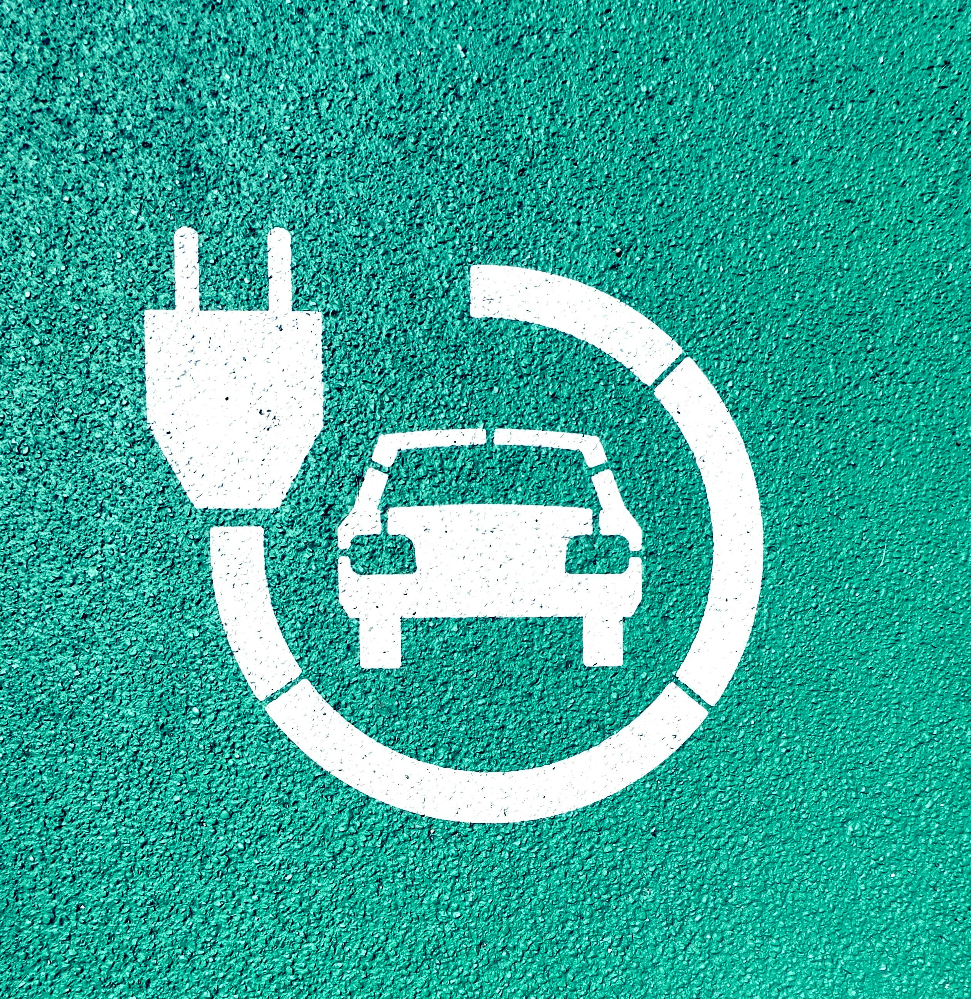
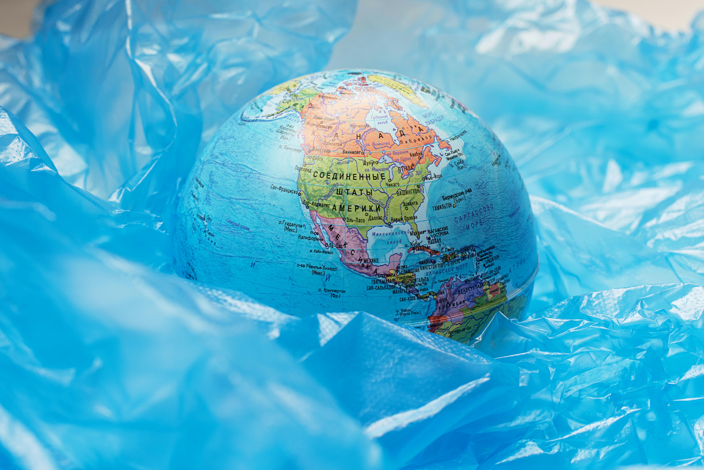

OUR COMMITMENT
At Pure Harvest Farms, organic farming and sustainability are at the core of everything we do. We’re committed to nurturing the earth while providing fresh, nutritious produce for our community. Through eco-friendly, regenerative practices, we ensure that future generations can continue to enjoy the natural abundance we cultivate today.
SUSTAINABLE PRACTICES
- We implement efficient irrigation methods and harvest rainwater to conserve water and reduce waste.
- Solar energy powers our farm operations, cutting down on our carbon footprint and supporting clean, renewable energy.
- Through the use of organic compost and thoughtful crop rotation, we maintain vibrant, healthy soil that naturally nurtures our plants.
- We prioritize sustainable packaging to minimize waste and contribute to a greener, more eco-friendly planet.
OUR PARTNERS

